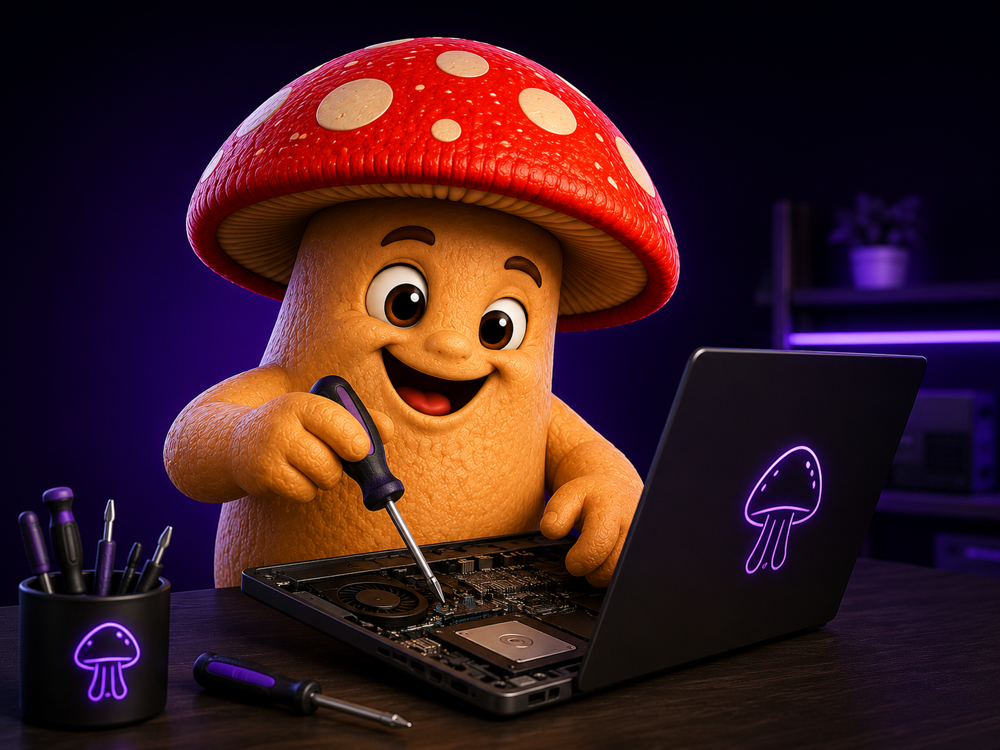
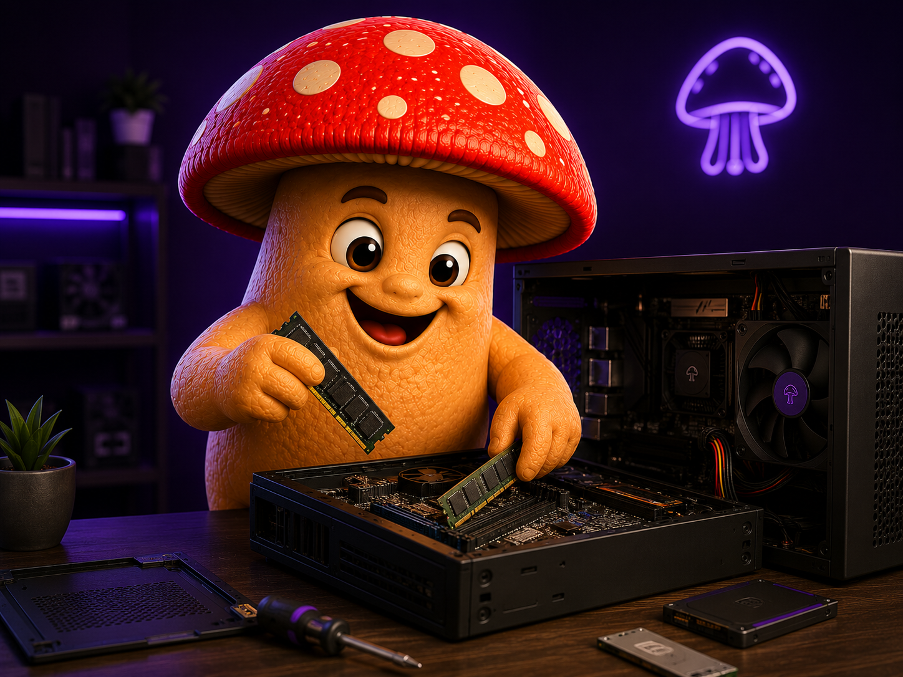
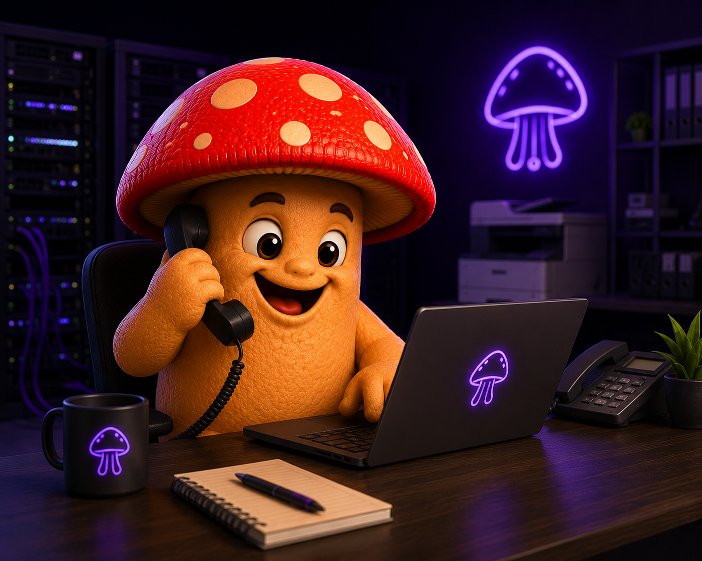
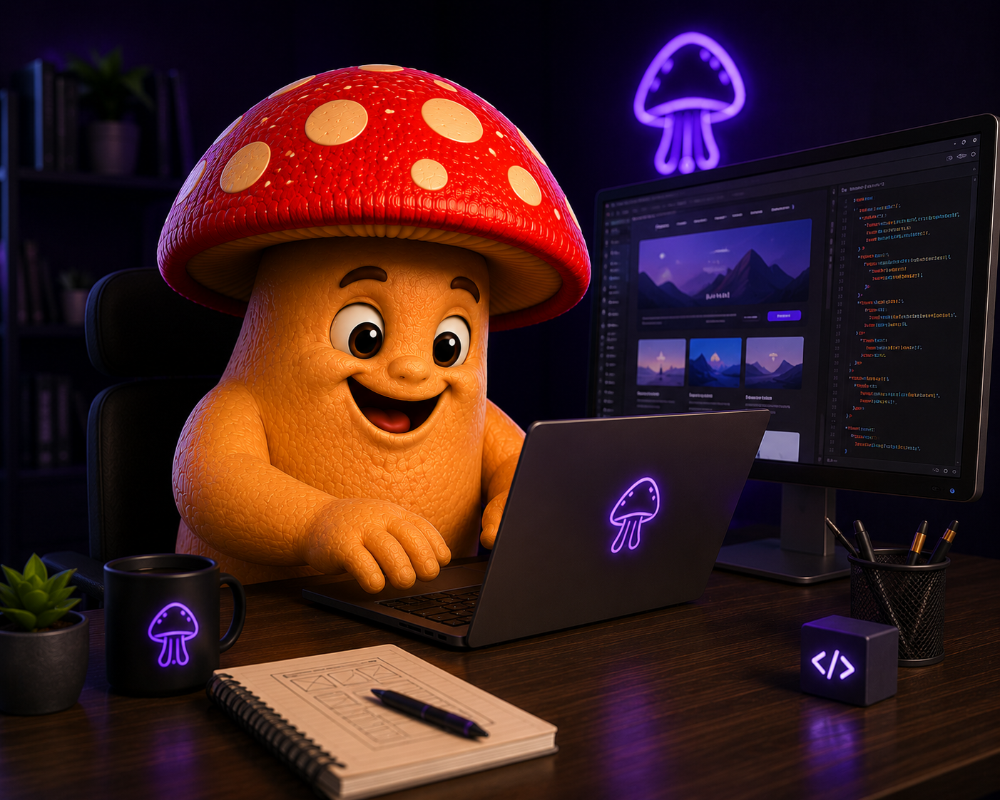
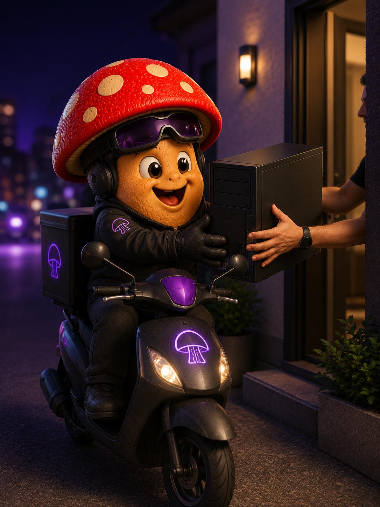
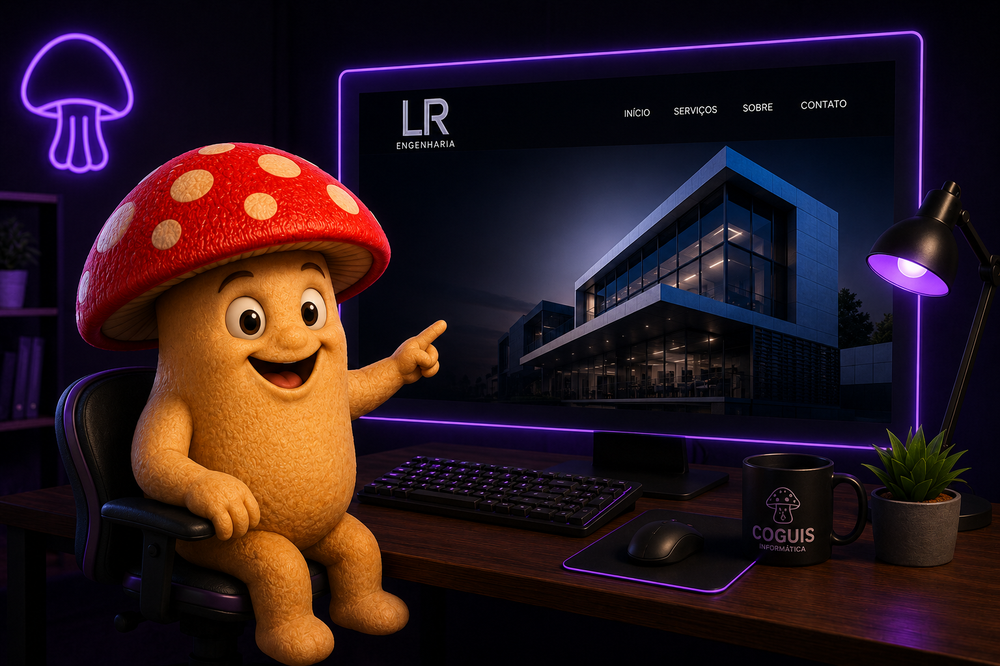

Atendimento humano
Comunicação clara, próxima e orientada à solução certa para o seu contexto.
Coguis Informática
Suporte técnico, manutenção, upgrades e soluções digitais com agilidade, cuidado real com seus dados e uma experiência profissional do primeiro contato à entrega.
Base de confiança
Clareza no processo, responsabilidade técnica e uma experiência pensada para fazer você se sentir seguro antes, durante e depois do atendimento.
Comunicação clara, próxima e orientada à solução certa para o seu contexto.
Seu equipamento e seus dados tratados com responsabilidade e cuidado real.
Resposta rápida sem abrir mão de diagnóstico correto e execução bem feita.
Soluções pensadas para funcionar bem, durar mais e gerar confiança no uso.
Manifesto institucional
A Coguis combina tecnologia, confiança e atendimento humano para entregar uma experiência mais clara, mais segura e mais eficiente em cada contato.
Serviços principais
Da manutenção ao digital, a Coguis atua em áreas que exigem confiança técnica, execução cuidadosa e atendimento próximo.

Diagnóstico, reparo e suporte técnico com cuidado real em cada etapa.

Mais desempenho, velocidade e vida útil para equipamentos que ainda podem evoluir.

Tecnologia confiável para operações que precisam funcionar com estabilidade.

Presença digital profissional para marcas que precisam transmitir valor online.
Diferencial Coguis
A Coguis busca, atende e entrega de volta para você, reduzindo deslocamentos, economizando tempo e tornando o atendimento mais simples no dia a dia.

Privacidade e confiança
A Coguis atua com responsabilidade no tratamento de dados, com uma postura baseada em cuidado, sigilo e confiança em cada atendimento realizado.
Desenvolvimento web
A Coguis também desenvolve presença digital para empresas e profissionais que precisam transmitir confiança, clareza e valor no ambiente online.
Estrutura profissional para apresentar sua marca com mais credibilidade.
Páginas pensadas para campanhas, anúncios e conversão com mais foco.
Projetos digitais para destacar experiência, autoridade e trabalho real.
Presença digital
Design, estrutura e percepção de valor para marcas que precisam parecer tão fortes quanto são.

Contato final
Atendimento em São Paulo e região para suporte técnico, manutenção, upgrades e sites profissionais, com contato direto e objetivo pelo WhatsApp.